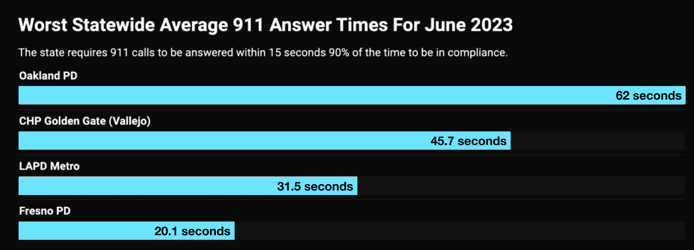
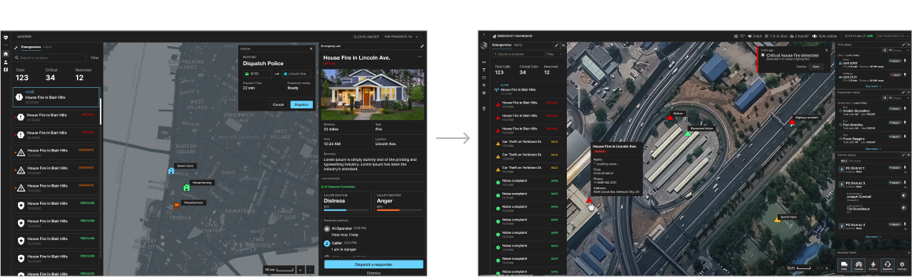

Winning the largest AI Hackathon in the World
I built Dispatch AI from a spontaneous trip with 3 friends at the Berkeley AI Hackathon. We won the Grand Prize and $18,000 in credits from Intel and OpenAI. Post-Hackathon, we decided to take this project further and launched a venture with Berkley Skydeck with $50,000 in investment. I worked as the solo designer.
Re-Architecting the Data Processing Pipeline
Outside of Design, I helped refactor the database structure to handle real-time calls and trained a lightweight ML Model to simplify call-handling. Click here to view the full code, thought process, and tradeoffs.
Ownership
I owned the entire design of DispatchAI — from user research and developing the MVP to branding and micro-interactions. I collaborated with 3 engineers to work with dispatchers and deputy chiefs on-site.
The Problem
“How might we empower dispatchers to efficiently manage non-emergency calls in order to increase confidence in addressing critical situations and safeguard the caller's well-being?”
911 Dispatchers are Overwhelmed
911 dispatchers are overwhelmed with non-emergency calls, which account for 80% of all calls . This leads to long wait times for emergency calls, and inefficient resource allocation . Dispatch aims to solve this problem by automating the process of handling non-emergency calls.
Heart Attack Victim waits 62 Seconds for his call.
The Oakland and LAPD Dispatch have wait times that fail to meet government safety standards almost every day of the year.
Secondary Research
A Life or Death Situation
Imagine a major earthquake striking a densely populated city. Within seconds, thousands of frantic 911 calls flood the emergency call center. Every line is busy, every second counts, but the overwhelmed operators can't answer every call. This isn't just a hypothetical scenario—it's a grim reality for many emergency services today.
Understanding the User
Visiting the LAPD: the Highest-Response Time Dispatch Center
Driving 60 miles to visit the LAPD
When we got invited to tour the LAPD for an onsite tour, I decided to drive 60 miles to Culver City to talk with users IRL.
Speaking with 10+ Dispatchers and Deputy Chiefs
We plugged into 911 calls to observe procedures firsthand and also spoke with a Staff Psychologist about common dispatcher stressors.
Documenting Findings
After the meeting, I transferred my notes to Figjam and identified key workflows and behavioral patterns that would inform the design solution.
“We get a lot of non-emergency calls that distract us from critical calls.”
— LAPD Deputy Chief
Translating findings from the LAPD
After the visit, I connected the dots across data points, stakeholders affected, and pain points to understand the root cause and affected parties at the LAPD Center.
üîç Design Opportunity
The LAPD dispatch center is
overloaded with non-emergency calls that exacerbate
their staffing shortage (which is uncontrollable), reducing the
quality of emergency response.
Offloading non-critical calls to an AI system could
reduce cognitive load and improve response times with the
same number of dispatchers
Uncovering Patterns
Our conversations with dispatchers, LAPD staff, and previous owners helped us uncover critical problem spaces to tackle. With this, we aimed to identify intervention points where DispatchAI could make the most impact.
Research Consolidation
Defining the Core User
After consolidating research from expert interviews, field / observational research from the LAPD, and conversations with the staff psychologist, we defined the core frustrations, experience, and aspirations of our target user: John.
Operator Flow
I developed a user flow after our conversation with the LAPD to map out key decision points (currently 3 in total marked by diamonds). The Current operator flow is messy with multiple manual steps and decisions that increase cognitive load . Our goal is to shift this paradigm to give operators back their confidence.
User Journey Mapping
This journey map visualizes the steps taken by operators during a 911 call, from the moment a call is received to the dispatch of emergency services. It highlights the pain points and opportunities for improvement in the current system.
üîç Design Opportunity
The research revealed that poorly-documented emergency calls caused by the unpredictable circumstances of dispatch is the root cause of distress. The opportunity, therefore, is offloading documentation to a more accurate and efficient agent
Primary Pain Points
Design Strategy
Investigating Need and Priorities
Based on our characterization of the target user, we conclude the following being crucial considerations in our design strategy:
- Maintaining familiar workflows and tools from legacy systems
- Identifying the key touch points that empower decision-making

Analyzing the Threat of Communication Breakdowns
Communications Failure is consistently identified as the primary cause for delayed first-responder response. This has caused unnecessary and tragic deaths that could have been avoidable with more effective communication systems
Addressing the Communications Failure
To address the communication failures that delay first-responder actions, I developed flow diagrams mapping the critical roles and decision points during a live emergency. By identifying key dependencies and breakdowns, I used this to inform the design of the handoff flow, ensuring vital information is funneled to all incident stakeholders.
Structure based on the Incident Command System under NIMS (National Incident Management System) for standardized emergency response.
üéØ The Primary Objective
The primary goal is to increase interoperability and efficient handoff of critical information while reducing the cognitive load of the dispatcher. This requires a careful balancing act between automation and human-in-the-loop decision-making. This will be addressed in future architecture designs.
Prioritizing Features
With key decision points, operator frustrations, and the user
journey defined, we prioritized features that
directly addressed the core problem of cognitive overload
from nonemergency calls.
Mapping Key Actions and Decision Points with Human-in-the-Loop
Based on the prioritized features, we worked to map each core action on a timeline. We emphasized areas to incorporate humans in the decision-making process as to maintain dispatcher’s autonomy and expertise in the end-to-end emergency cycle.
KEY INSIGHTS
⏰ Non-Emergency Responses causes critical delays
Research demonstrated that 9/10 calls are noncritical. This is not only exacerbated by the staffing shortage, but causes critical mental health problems for dispatchers. In large-scale crises, delays can result in preventable deaths.
üì° Breakdown of Communication Systems Exacerbate Emergencies
Most calls are built around radio frequency. Interference with these brittle mediums can cause the entire communication line to collapse. This is what happened during the 9/11 attacks when hundreds of firefighter lives were lost due to insufficient communications infrastructure.
ü߆ Operator Cognitive Load caused Major Errors
Manual instruction scripts, muffled calls, and quasi geolocation services are daily experiences for dispatchers. This has led to misinformed decisions, inaccurate location identification, and extreme stress for dispatchers.
Design Iterations
Defining Functional Requirements
On top of Product Design, I also acted as our team's Product Manager to translate and define requirements based on user insight. Our product goal is to design intuitive and customizable modules to enable dispatchers to make quicker decisions with more confidence and less stress.
With my team, we defined several core functional requirements:
- Clear alert system for handoff between the AI and Human Operator
- Incident management panel with real-time action suggestions
- Modular and customizable panels for situational awareness
The Dispatch AI Operational Loop
Dispatch AI is designed around a continuous operational loop where data is collected, analyzed, and integrated to inform real-time decision making. Data is logged and used to inform future decisions.
Low Fidelity Mockups
Based on feedback from the LAPD, the lofi design prioritizes
modularity through panel-based widget design and
meaningful organization of information so operators
can quickly access information that drive action.
The following were developed at this stage:
- Modular panels
- Modals and toasts
- Improving and building on the Hackathon MVP
High Fidelity Mockups
After finalizing the overall information architecture, I developed a design system with colors and icons aligned with the NATO Symbology guidelines for military and government applications. The modules were further refined with additional detail to align with the multi-tasking workflow dispatchers are familiar with. Fully equipped screens were prioritized over limiting information.

Information Flow for Actionable Data
This is based on how humans naturally read information: top down and left right. This is how data is represented to prevent passive ingestion and promote active decision-making with data.
- Top: high level metrics and health checks for quick decision-making
- Middle: most complex information for detailed analytics, drill down, strategy
- Bottom: operational control and resource management
Pre and Post Hackathon Iterations
I improved on the MVP designs from the Hackathon based on new user
interviews and conversations we had with dispatchers and
government officials.
Design decisions that were made:
- Incorporate more modularity and customization
- Interactive map interface for situational awareness
- Separate incident management panel for action planning

Final Design
View emergencies in real-time
Translate languages, view transcript, and approve recommendations during a live call.
Reviewing and approving action recommendations
AI recommends actions based on historic and live data while the operator reviews and selects those to approve.
Customizable Modules for Situational Awareness
Dispatchers can customize their interface and toggle on-off modules at will. They can expand modules to view more info.
View and Resolve Alerts
Alerts are generated from live calls. Dispatchers can view old alerts or resolve new alerts.
View previous calls to make decisions
Dispatchers and Center Managers can view previous logs of call data to inform future decisions.
Forecast future call volumes and provide recommendations
Forecast future calls based on historic call data and geographic metrics.
Micro Interactions
Toggle on-and-off Modules Panel
Give operators more freedom and customizability with their interface to display necessary situational data at different parts of the workflow.
Pathfinding Interactions
Operators can monitor the path first-responders will travel based on live google maps data. They can see the traffic between each waypoint, view status updates, and recommend a change in the route if necessary.
User Feedback
Keeping the operator-in-the-loop by incorporating their feedback during decision-making. This data will be used to inform and adapt future AI recommendations.
Drag and Drop
To enforce customization and modularity, all panels are draggable and can be turned on and off depending on need. This increases situational awareness and enables more autonomy in deciding what info is most important.
Code and Data Processing
Data Processing Pipeline for Live Communication
I re-calibrated the data management system from
Postgres to Redis to handle real-time calls. Research
indicated that speedy communication is crucial. The technical handling of live calls has
significant impact on user experience and enabling a
scalable architecture.
I re-evaluated and re-programmed the codebase to address the
inefficiency with Postgres.

Predictive Analytics for Event Forecasting
I programmed a Machine Learning Pipeline with historic call data (sourced from online call datasets) to recommend actions, live script messages, and forecast high volume call periods. I trained a model with Long Short Term Memory (LSTM) and the GPT4 to generate script recommendations.

Evaluating Model Performance
I developed benchmark tests to evaluate the comparative efficiency of a sequential model vs parallel processing. Since the speed of data processing directly impacts the way information is consumed by the user and the response time (a core business metric), this exercise gave extra context for the design.
Benchmarking OpenAI GPT4 Model
Measuring latency of a single input prediction.
Benchmarking Mistral LLM Model
Large Language Model used for Complex Natural Language Tasks.
Verdict
Caller scripts are streamed sequentially in real-time. Thus, LTSM
is ideal for simpler non-emergency calls with
limited computational overhead and faster response times.
Latency: LTSM has more consistent latency. Mistral
increases latency proportional to batch size
Accuracy: Mistral is ~13% more accurate than LTSM,
however the latency is less consistent
Translating Technical Insights to Design Decisions
I evaluated the technical and design trade-offs of implementing a simpler, LSTM algorithm and corresponding design decisions based on user and business goals.
Key Insight
Evaluating the Engineering trade-offs revealed that implementing fully equipped modules matters more than reducing cognitive load to enhance situational awareness. Dispatchers are already familiar with multiple screens. Removing these would be limiting to what they're already trained to use.
Design System
Design System and Components
The design system is aligned with NATO Iconography and Color Guidelines. Widget components are modulated to fit multiple use cases for different emergency scenarios.

Panels and Modules
Panel and modal components for a modular design palette.


Key Takeaways
Balancing AI Automation and Human Judgement is vital
Despite the demanding nature of dispatch work, there should never be a case where human judgment is completely sacrificed for automated decision-making. I ensured that every key decision point is attached with human confirmation. Additionally, feedback loops adapt action recommendations based on operator input.
Iteration and Feedback Loops are the Cornerstone of Good Design
Designing the interface while also balancing customer discovery
calls and on-site tours taught me the importance of constant
iteration. Every dispatch center expressed derived value from
different feature proposals (ex: dispatcher trainings vs 912
calls).
It is important to iterate strategically. Early on,
we identified nonemergency calls as our primary
vertical, and stuck to this. Despite dispatch centers giving us
related frustrations, we recognized the
root issue was resource overwhelm from high call
volumes
. This is what we iterated on.
more to come soon...